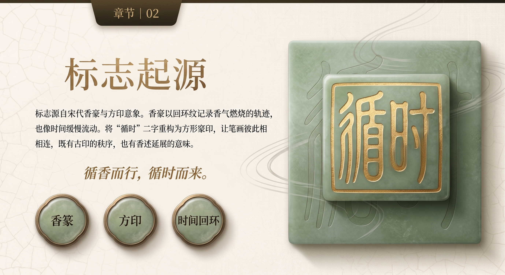
标志起源
香篆、方印、时间回环。
品牌视觉 · 角色设计 · 影像叙事
以时间为核心，纵向连接宋代制香与当代香水，横向形成春、夏、秋、冬的气味循环。瓶型、标志、香型、礼赠与影像共同构成一个完整的原创东方香氛世界。
品牌世界构建 · 产品设计 · 文化叙事 · 平面传播 · 动态影像

香篆、方印、时间回环。
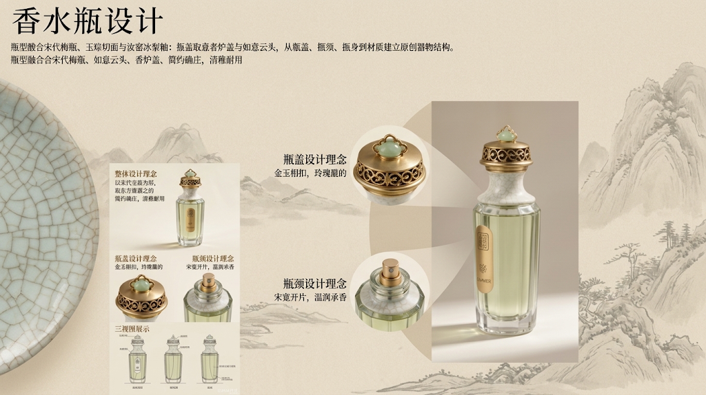
瓶型融合宋代梅瓶、玉琮切面与汝窑冰裂釉；瓶盖取意香炉盖与如意云头，从瓶盖、瓶颈、瓶身到材质建立原创器物结构。
以玫瑰、栀子、桂花与白梅连接四时流转；秋·桂魄自然延展至中秋礼赠，让同一品牌系统适应季节与节日场景。
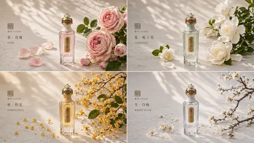
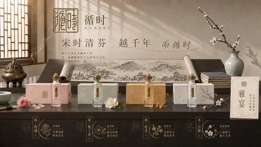
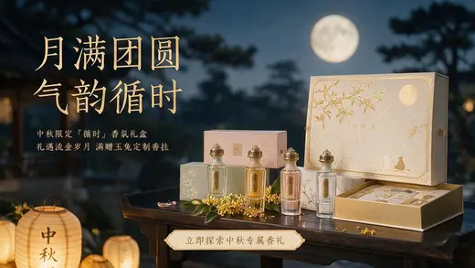
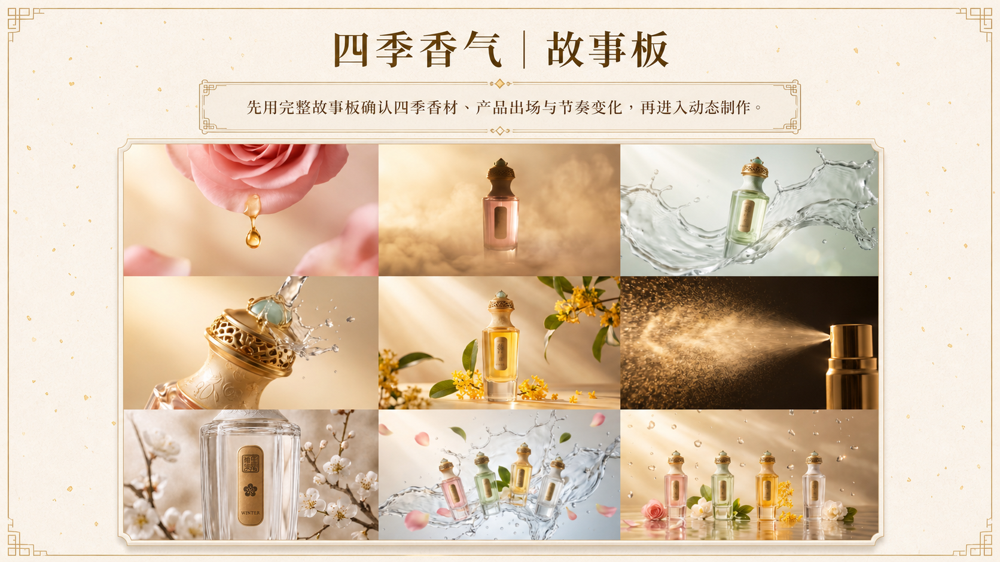
先用完整故事板确认四季香材、产品出场与节奏变化，再进入动态制作。
以花材、水流与瓶身特写连接春夏秋冬，让四种香气形成一次完整循环。
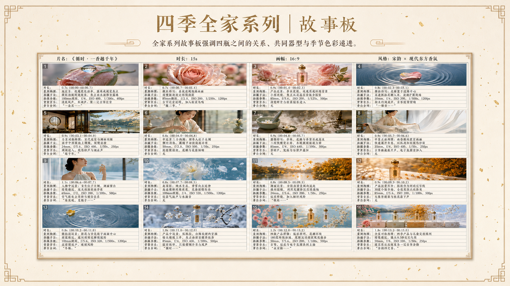
全家系列故事板强调四瓶之间的关系、共同器型与季节色彩递进。
全家系列影像将四季产品放在同一品牌世界中，突出家族感而不是四支孤立广告。
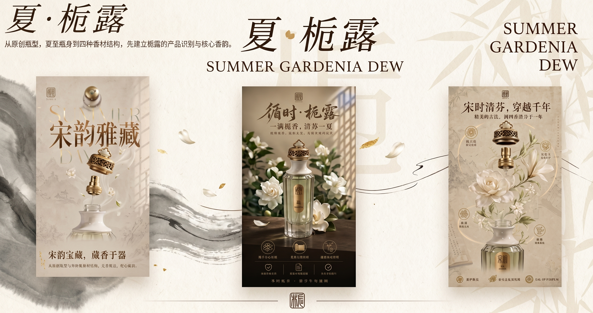
从原创瓶型、夏季瓶身到四种香材结构，先建立栀露的产品识别与核心香韵。
从宋代制香叙事进入产品参数与电商礼盒，让文化故事、产品信息和销售场景彼此衔接。
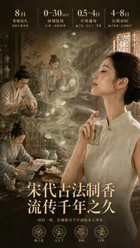
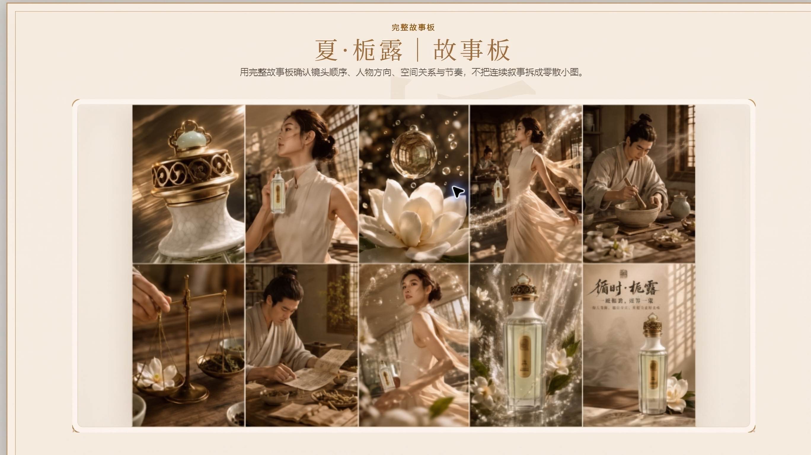
用完整故事板确认镜头顺序、人物方向、空间关系与节奏，不把连续叙事拆成零散小图。
把静态视觉规则转成运镜、动作、声音与剪辑节奏，让成片延续前面建立的角色和品牌系统。
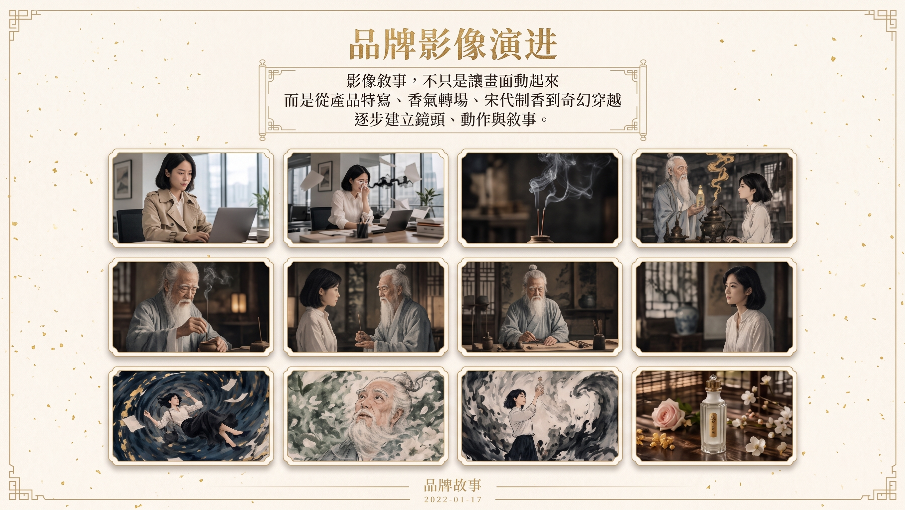
影像不是让画面随机动起来，而是从产品特写、香气转场、宋代制香到奇幻穿越，逐步建立镜头、动作与叙事。
把静态视觉规则转成运镜、动作、声音与剪辑节奏，让成片延续前面建立的角色和品牌系统。
从一笔现代书法出发，将山水、宣纸、低饱和青绿与克制留白整理成品牌规则，并延展到包装、奶茶、周边、户外广告与丝瓜猫联名。
让“茶道”二字像一座山，最后一笔自然延伸为山脉；以克制飞白、低饱和山水绿和宣纸留白建立现代东方识别。
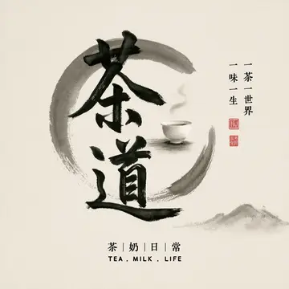
将书法笔势、青绿山水、象牙纸色与印章红整理为稳定规则，让品牌在不同媒介中保持安静、年轻与高级。
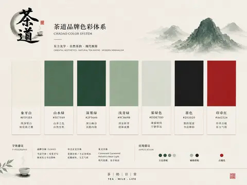
餐巾纸与保温杯把品牌带进门店服务与通勤场景，也可以组合为轻量礼赠。
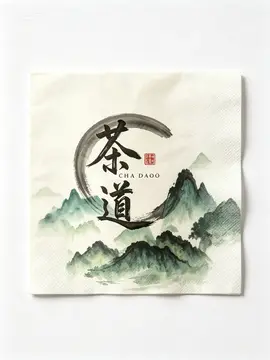
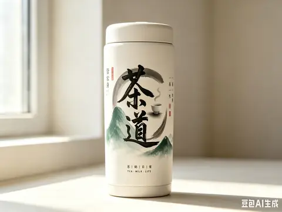
奶茶杯与手提袋承担最日常的移动识别，也适合承载季节新品与线下活动。
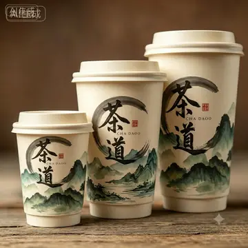
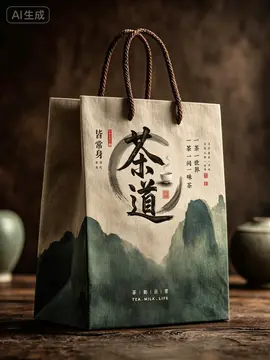
马克杯与茶叶盒可以独立售卖，也可以组合成办公、居家与伴手礼场景。
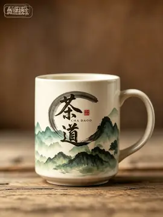
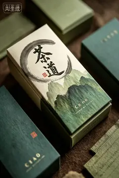
礼盒把茶叶、器物与品牌故事收拢为完整赠礼体验，可用于节日限定与商务礼赠。
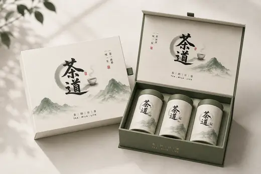
以远山、茶杯和大面积呼吸感进入户外传播；不同尺寸广告保持同一笔势、色彩与品牌气质。
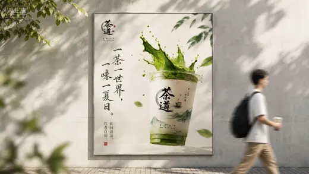
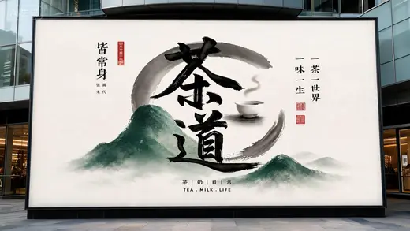
丝瓜猫进入奶茶新品、体育节点与周边产品，让角色第一次承担品牌传播任务，并为下一项目埋下线索。
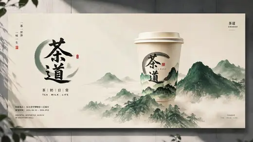
延续“猫形象联名”的视觉规则，在不同画面与媒介中继续验证一致性与可延展性。
从有记忆点的角色原型开始，先锁定外形与性格，再让它进入数字代言、商业联名与国风武侠世界，完成从形象到角色、从角色到世界观的扩展。
以圆、短、懒、冷建立第一眼性格，同时用稳定的正面比例、虎斑纹与半睁眼神锁定角色基因。
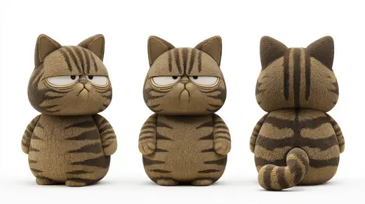
把角色从静态设定转成能说、能动、能表达态度的数字代言人，用轻松可爱的节奏为作品集增加趣味。
把静态视觉规则转成运镜、动作、声音与剪辑节奏，让成片延续前面建立的角色和品牌系统。
当角色离开商业广告，便进入由丝瓜猫、冬瓜狐、动作关系与空间冲突共同构成的国风武侠世界。
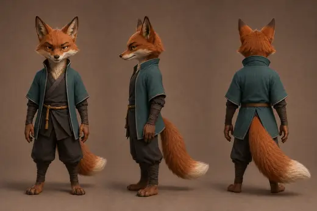
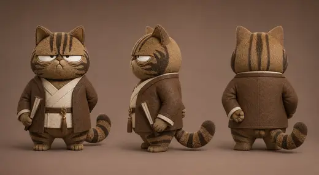
用完整故事板确认镜头顺序、人物方向、空间关系与节奏，不把连续叙事拆成零散小图。
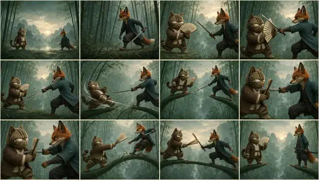
把静态视觉规则转成运镜、动作、声音与剪辑节奏，让成片延续前面建立的角色和品牌系统。
这些结果不是一句提示词得来的，而是经过想法、参考、人物、场景、镜头、故事板、一致性、动态、音乐、声音与剪辑的一整套制作过程。
从参考图建立人物圣经，先锁定金泽旅人的身份、服装、神态与随身物，再进入不同景别、光线与动作。
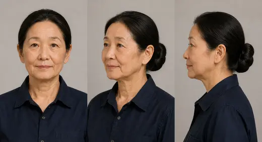
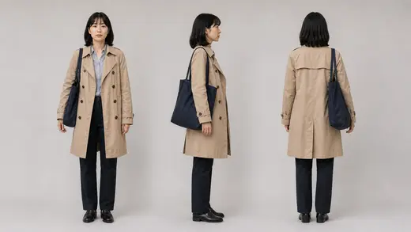
延续“旅游短片｜人物设定”的视觉规则，在不同画面与媒介中继续验证一致性与可延展性。
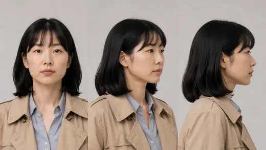
把雨夜行走、寻找、停留与抵达拆成连续镜头，用人物方向、空间锚点和光线变化维持叙事连续性。
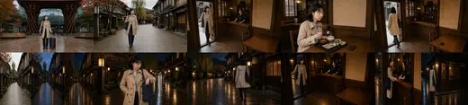
静态关键帧进入动态后，继续设计运镜、动作幅度、节奏、环境声与剪辑点；当前成片之后可直接替换最终版本。
先建立明代人物的服饰、衣色、身份与礼仪关系，再以同一套参考规则进入宫廷、雪景与暖阁。
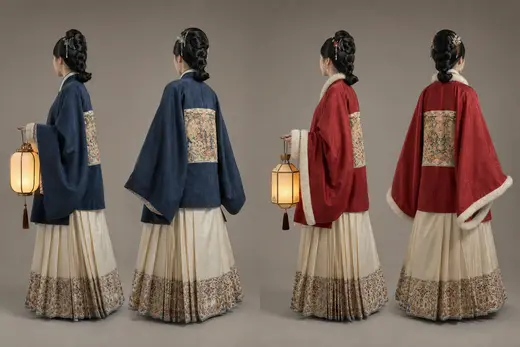
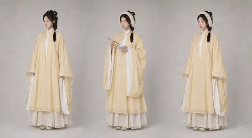
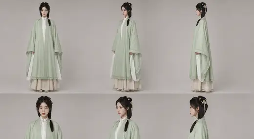
延续“明代冬至｜人物设定”的视觉规则，在不同画面与媒介中继续验证一致性与可延展性。
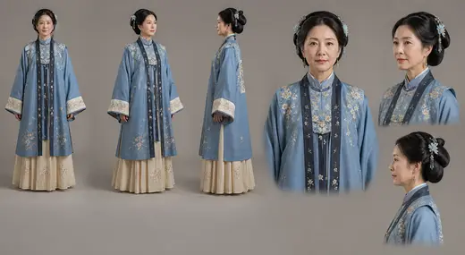
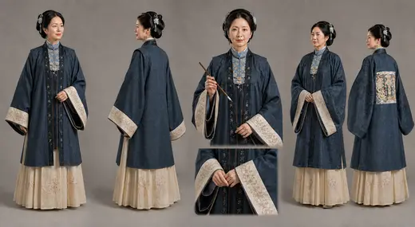
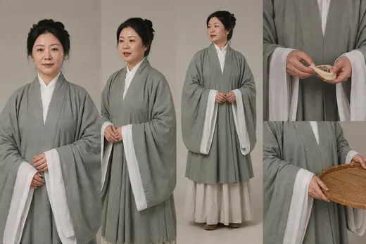
延续“明代冬至｜人物设定”的视觉规则，在不同画面与媒介中继续验证一致性与可延展性。
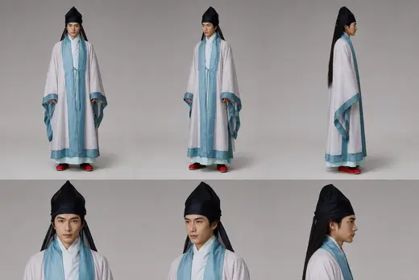
以冷雪、红墙、宫廷中轴与暖阁家宴建立空间对照，通过完整故事板控制礼仪动作与叙事节奏。
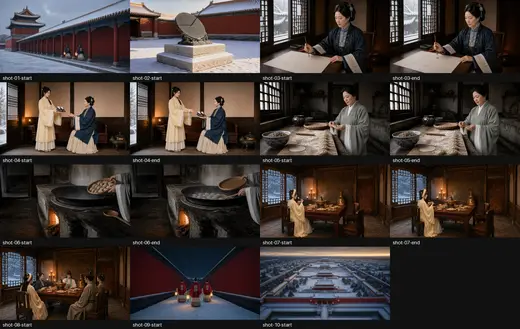
同一套角色锁定、场景锚点、分镜、动态、声音与剪辑方法进入另一种时代和故事，证明方法可以复用，美学不会复制。
创意概念
品牌世界观
视觉风格
品牌视觉
产品概念
包装与平面广告
角色形象
人物与场景
分镜与运镜
智能影像与动画
图像生成
一致性控制
音乐与音效
剪辑与成片

我是一名专注人工智能商业视觉与动态内容的创作者。循时香氛、茶道东方茶饮与丝瓜猫形象，均由我从品牌概念、虚构产品、造型审美到视觉系统独立设计。